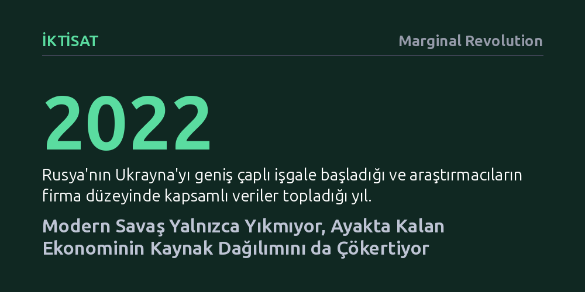

IKTISAT · Marginal Revolution · 2026-09-12
Ukrayna'daki firma verileri, modern savaşın üretimi yalnızca yıkımla değil, ayakta kalan ekonomideki kaynak dağılım verimliliğini çökerterek de düşürdüğünü gösteriyor. Kaynakların doğru işletmelere akamaması, fiziksel tahribatın ötesinde ulusal savunma kapasitesini ve ekonomik dayanıklılığı içeriden zayıflatıyor.
Savaşın ekonomik faturasının yalnızca bombalanan binalardan ibaret olmadığını, piyasanın sermaye ve emeği verimli şirketlere yönlendirme mekanizması çöktüğünde ayakta kalan ekonominin de felç olduğunu gösterir.

Bir savaş patlak verdiğinde dikkatler kaçınılmaz olarak doğrudan fiziksel hasara odaklanır: yerle bir olan köprüler, bombalanan enerji santralleri ve enkaza dönen fabrikalar. Ancak çatışmaların yol açtığı toplam ekonomik kayıp, fiziki sermayedeki somut yıkımın katbekat ötesine geçer. İktisatçılar Yuriy Gorodnichenko, Marvin Amann ve Oleksandr Talavera'nın Ukrayna deneyimini inceleyen yeni çalışması, tam da bu karanlıkta kalan mekanizmaya ışık tutuyor.
Araştırmanın temel tespiti çarpıcı: Modern savaşlar toplam üretimi yalnızca üretim faktörlerini fiziken yok ederek değil, hayatta kalmayı başaran ekonominin çalışma verimliliğini sekteye uğratarak da çökertiyor. Başka bir deyişle, cephe hattından uzakta kalan, hiçbir bombanın isabet etmediği ve makineleri sağlam duran işletmeler dahi savaş koşullarında olağan performanslarının çok gerisinde kalıyor; çünkü iktisadi ekosistemin bütünü işlevsizleşiyor.
Yazarlar savlarını desteklemek için Rusya'nın 2022'de Ukrayna'yı geniş çaplı işgali sırasında toplanan kapsamlı firma düzeyi mikro verileri inceliyor. Elde edilen bulgular, ülke genelinde "tahsisat verimliliğinde" çok sert ve ani bir çöküş yaşandığını belgeliyor. Sağlıklı işleyen bir piyasada sermaye, hammadde ve işgücü en üretken şirketlere doğru akar; ancak savaş ortamı bu doğal yönlendirme kanallarını neredeyse tamamen tıkıyor.
Araştırmacılar, bu kaybın savaşın kendisine özgü etkisini yalıtmak amacıyla Ukrayna'nın farklı ilçeleri arasındaki çatışma yoğunluğu farklarından faydalanıyor. Bulguları daha da netleştirmek adına mevcut tabloyu Rusya'nın 2014'teki ilk saldırısıyla ve 2008 Küresel Finansal Krizi ile kıyaslıyorlar. Karşılaştırmalar; savaşın şiddeti, kitlesel iç göç ve genel makroekonomik istikrarsızlığın bir araya gelerek kaynakların verimli firmalara yeniden dağıtılmasını imkânsız hale getirdiğini doğruluyor.
Çalışmanın karar vericilere yönelik en kritik uyarısı, bir ülkenin savaşma ve direnme kapasitesinin sadece ordu mevcudu veya mühimmat stokuyla ölçülemeyeceğidir. Kaynak dağılımı mekanizması felç olan bir ülke, savaşı finanse etmek ve lojistiği ayakta tutmak için gereken ekonomik çıktıyı zamanla üretemez hale gelir.
Yazarlara göre ulusal güvenlik ve savunma kapasitesini sürdürülebilir kılmak, olağanüstü kriz dönemlerinde kaynakların hızla yeniden dağıtılmasını sağlayacak kurumsal altyapının barış zamanında inşa edilmesine bağlıdır. Şok anlarında sermaye ve işgücünün ihtiyaç duyulan verimli alanlara süratle kaymasını kolaylaştıran yasal ve idari mekanizmalar, en az askeri tedbirler kadar hayati bir savunma kalkanı görevi görmektedir.